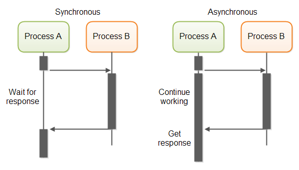

AJAX and RESTFull APIs
Created for
Created by

Client-Server Communications on HTTP
Client-Server Communications on HTTP
{kind=link}
HTTP protocol overview
HTTP protocol overview
in brief
- HTTP = HyperText Transfer Protocol
- HTTP is a request-response protocol.
- the client sends a request message to the server
- the server returns a response message
message format

- each message consists of two parts:
- Header - information about the message
- Body - message content
Request Message Format
Request Message Format

Request Line
request-method-name request-URI HTTP-version
- request-method: defines how to send the request (GET, POST, HEAD etc)
- request-URI: the URI of the resource requested
- HTTP-version: latest version is HTTP/2
GET /search?q=apple HTTP/1.1
HEAD /query.html HTTP/1.1
POST /index.html HTTP/1.1
Request Headers
field-name: field-value1[, field-value2, ...]
The request-header fields allow the client to pass additional information about the request, and about the client itself, to the server
Host: google.com
User-Agent: curl/7.47.0
Accept: */*
cache-control: no-cache
cookie: OGPC=19022519-1:; OGP=-19022519:; OTZ=5933950_44_48_123900_44_436380;
Request Body
Optional
Response Message Format
Response Message Format

Status Line
HTTP-version status-code reason-phrase
- HTTP-version: The HTTP version used in this session.
- status-code: a 3-digit number generated by the server to reflect the outcome of the request
- reason-phrase: gives a short explanation to the status code.
HTTP/1.1 200 OK
HTTP/1.1 301 Moved Permanently
HTTP/1.1 404 Not Found
Response Headers
field-name: field-value1[, field-value2, ...]
HTTP/1.1 200 OK
Server: nginx
Date: Sun, 11 Jun 2017 14:05:01 GMT
Content-Type: text/html; charset=UTF-8
Connection: keep-alive
Keep-Alive: timeout=20
X-Pingback: http://www.javelingroup.com/xmlrpc.php
Link: Response Body
The response message body contains the resource data requested
HTTP Request Methods
HTTP Request Methods
HTTP protocol defines a set of request methods, which a client can use to request a server resource.
The "GET" Request Method
- GET requests should be used only to retrieve data, and not to change the server state
- GET requests should NEVER be used with sensitive data
- GET requests have length restrictions
- GET requests can be cached
- GET requests remain in the browser history
- GET requests can be bookmarked
- The query string is sent in the URL
https://duckduckgo.com/?q=http+get+request&t=hz&ia=web
The "POST" Request Method
- POST request method is used to sent data to the server, like customer information, file upload etc.
- POST request should change the server state
- the query string will be sent in the body of the request message
- the request headers Content-Type and Content-Length are used to notify the server the type and the length of the query string
- POST requests are never cached
- POST requests do not remain in the browser history
- POST requests cannot be bookmarked
- POST requests have no restrictions on data length
Other HTTP Request Methods
- PUT
- Replaces all current representations of the target resource with the uploaded content.
- In other words, PUT is used to update the content on server
- DELETE
- Deletes the specified resource
- HEAD
- Same as GET, but transfers the status line and header section only. No document body is returned!
- OPTIONS
- Ask the server to return the list of request methods it supports
Using HTTP Methods for RESTful Services
Using HTTP Methods for RESTful Services
Overview
- RESTful (aka REST) services defines a way on how a resource can be accessed from the client and what will be done with that resource.
- The standard operations on a resource are: Create, Read, Update, Delete (CRUD).
- REST Services follow standardised HTTP methods for resource manipulation (POST, GET, PUT, PATCH, and DELETE.)
Mapping REST methods to CRUD operations
| HTTP Method | CRUD operation |
|---|---|
| GET | Read |
| POST | Create |
| PUT | Update/Replace |
| PATCH | Update/Modify |
| DELETE | Delete |
What is AJAX?
What is AJAX?
Overview
Asynchronous
JavaScript
And
XML
In reality, these days, the use of JSON prevails over XML, but for backward compatibility we do not say AJAJ
Overview
With AJAX, Web applications can send and retrieve data from a Web server asynchronously (in the background) without refreshing the existent page
Synchronous vs. Asynchronous Processes
{kind=link}
Synchronous vs. Asynchronous Requests

What can we do with AJAX
- Update a web page without reloading the page
- Request data from a server - after the page has loaded
- Receive data from a server - after the page has loaded
- Send data to a server - in the background
Conventional vs AJAX model of Web Application

What's behind AJAX?
- AJAX is just the name for combination of technologies:
- the use of the built-in XMLHttpRequest object (aka XHR Object) to request data from a web server
- the use of JavaScript and HTML DOM (to display the data)
{kind=link}
the XMLHttpRequest object
the XMLHttpRequest object
- Note: sending Ajax Requests using XMLHttpRequest object directly is not recommended, as it is hard to imeplement and read. The preferred way is using the Fetch API, discussed in next slides
- Reference: XMLHttpRequest @MDN
- Reference: Asynchronous JavaScript: Choosing the right approach @MDN
Simple example
- After clicking the Get data button, the data will be fetched and loaded in div.output
- Note, that the whole page will not be refreshed
let dom={
output: document.querySelector('.output'),
getDataBtn: document.querySelector('.getDataBtn'),
};
const dataURL = '/data/heyYouLirics.txt';
let fetchDataByXHR = function(){
// create a XMLHttpRequest object
let xhr = window.XMLHttpRequest ? new XMLHttpRequest() :
new ActiveXObject("Microsoft.XMLHTTP");
// initializes the request:
xhr.open("GET", dataURL);
// EventHandler, that will be fired each time when the xhr state changes
xhr.onreadystatechange = function() {
if (this.readyState == 4 && this.status == 200) {
// finally do something with content:
console.log(this.responseText);
dom.output.innerHTML = this.responseText;
};
};
// sends the request:
xhr.send();
};
dom.getDataBtn.addEventListener('click', function(){
fetchDataByXHR();
});
the Fetch API
the Fetch API
- The Fetch API provides an interface for fetching resources, similar to the XMLHttpRequest, but the new API provides a more powerful and flexible feature set.
- Fetch APIs use the concept of promises in JavaScript
- As Fetch APIs are "A modern replacement for XMLHttpRequest",but do think about the browser compatibility: caniuse.com: fetch
Fetch API basics
fetch(url)
.then(function (response){
return response.text();
})
.then(function (responseText){
// do something with responseText
nodes.output.innerHTML = responseText;
})
- Reference: Fetch API at MDN
Fetch API with error checks
- Fetch promises only reject with a TypeError (i.e. execute
catchfunction) only when a network error occurs. - You'll need to throw an error yourself, if you want to use Promise#catch for 4xx and 5xx responses
fetch(url)
.then(function (response) {
if( response.text){
return response.text();
}else{
throw new Error("No response.text")
}
})
.then(function (responseText) {
// renderHTML(responseText);
nodes.output.innerHTML = responseText;
})
.catch( function(error){
console.error('Upss, an error occurred');
console.error(error.message);
});
More on response interface
Response interface at MDN
Create HTTP request with jQuery
Create HTTP request with jQuery
simple get() example
<head>
<script type="text/javascript" src="//cdnjs.cloudflare.com/ajax/libs/jquery/3.2.1/jquery.min.js"></script>
</head>
<body>
<button class="getDataBtn">Get data</button>
<div class="output"></div>
</body>
$(".getDataBtn").click(function(){
$.get(dataURL, function(data, status){
// do something with data:
$(".output").html(data);
});
});
simple load() example
<head>
<script type="text/javascript" src="//cdnjs.cloudflare.com/ajax/libs/jquery/3.2.1/jquery.min.js"></script>
</head>
<body>
<button class="getDataBtn">Get data</button>
<div class="output"></div>
</body>
$(".getDataBtn").click(function(){
$(".output").load(dataURL);
});
The JSON Format
Overview
What is JSON?
- JSON = JavaScript Object Notation
- A data-interchange format between software systems.
- Language agnostic
- Proposed by Douglas Crockford in early 2000s
Why JSON?
- Easy for humans (and the machines) to read and write
- Minimalistic syntax (compared to other formats, like XML).
- A strict subset of JavaScript syntax.
- Well defined JSON Schema
JSON vs XML
{
'fruits': ['apple', 'orange', 'banana'],
}
apple
orange
banane
JSON data types
- Number
- a signed decimal number that may contain a fractional part
- String
- a sequence of zero or more Unicode characters, delimited by double quotation mark
- Boolean
- either of the values true or false
- Array
- an ordered list of zero or more values (may be of any type). Comma-separated elements in square brackets
- Object
- an unordered collection of
key:valuepairs, separated by comma, delimited by curly braces. The keys must be strings.
Example
{
"userName": "Ada",
"userAge": 24,
"skills": [
"HTML", "CSS", "JavaScript"
],
"tasks": [
{
"id": 1,
"title":"Learn Sass",
"completed": true
},
{
"id": 1,
"title":"Learn React",
"completed": false
}
]
}
You can check your JSON online: jsonformatter.curiousconcept.com or use a VSCode extension.
Parse JSON (JSON to JS object)
- JSON data just describes data. They are strings.
- In order to use the data conveyed in a JSON string in our JS program, we must parse it's content to the corresponding JS data structure.
- Reference: JSON.parse()
var data = JSON.parse(jsonDataStr);
Stingify JSON (JS obj to JSON)
- We can easily convey our JS data to other application, by converting it to a JSON string.
- Reference: JSON.stringify()
var jsonDataStr = JSON.stringify(obj);
Public APIs returning JSON
- List of public APIs
- Public APIs list on GitHub
- The Internet Chuck Norris Database API
- Open Trivia Database API
- {JSON} Placeholder - Free fake API for testing and prototyping.
Client-Side vs Server-Side libraries and frameworks
Client-Side vs Server-Side Rendering libraries and frameworks
- Ember
- Ember - Client-Side rendering
- Ember-Fastboot - Server-Side rendering
- Vue
- vue.js - Client-Side rendering
- nuxt.js - Server-Side rendering for vue.js
- React - it can render on the client-side and on the server-side
- Angular
- Angular - - Client-Side rendering
- Angular Universal - Server-Side rendering
Resources
Resources
Tools
- Mockaroo - A free test/random data generator and API mocking tool (JSON, CSV, SQL, and Excel)
Exercises && Tasks
Exercises && Tasks
songsLyrics
- Create a web page similar to the one given bellow, with your favorite artists and songs
- For getting the lyrics data, use the three approaches for making AJAX requests:
- by XMLHttpRequest object
- by Fetch APIs
- by jQuery get() or load() methods
- You can use the files in songLyrics.zip to bootstrap your program.

TodoApp with jsonplaceholder API service
- Refactor the TodoApp, so that data to be fetched from jsonplaceholder.typicode.com/todos endpoint
- Use the FetchAPI to fetch the data
Task: todoApp with local JSON Placeholder Service
Task: todoApp with local JSON Placeholder Service
The API endpoints
- API Root:
https://jsonplaceholder.typicode.com
| GET | /todos | Get all todos |
| GET | /todos/1 | Get todo with id=1 |
| POST | /todos | Create new Todo |
| PUT | /todos/1 | Update Todo with id=1) |
| DELETE | /todos/1 | Delete Todo with id=1) |
Setup fake REST API json-server and DB
Setup fake REST API json-server and DB
Overview
- We can use a fake REST API json-server, to mock the back-end endpoints.
- It is freely available on NPM and ready to use.
- Please note, that this server is useful only for learning purposes and you must not use it for any production code.
- Before starting the project, make sure you have basic understanding of how to use npm ( Nodejs and NPM intro )
Installation
- Install json-server
- To prevent polluting your global environment, it's recommended to install NPM packages locally, i.e. without the
-goption.
# navigate to your project root folder
$ cd /path/to/TodoApp
# install json-server package
npm install json-server
Create the DB file
- In project root folder create the file
db.jsonwith next content:
{
"todos":[
{
"id": 1,
"title": "Learn HTML",
"completed": false
},
{
"id": 2,
"title": "Learn CSS",
"completed": false
},
{
"id": 3,
"title": "Learn JavaScript",
"completed": false
}
]
}
Start the server
- All locally installed NPM packages place the executable commands in
./node-modules/.bin/folder. You can start json-server by: - Or you can use npx which executes 'command' either from a local node_modules/.bin, or from a central cache, installing any packages needed in order for 'command' to run.
$ ./node_modules/.bin/json-server --watch db.json
json-server usage notes
- Your request body JSON should be object enclosed, just like the GET output. (for example {"name": "Foobar"})
- Id values are not mutable. Any id value in the body of your PUT or PATCH request will be ignored. Only a value set in a POST request will be respected, but only if not already taken.
- A POST, PUT or PATCH request should include a Content-Type: application/json header to use the JSON in the request body. Otherwise it will result in a 200 OK but without changes being made to the data.
References
- Video Tutorial: Creating demo APIs with json-server
- Official docs: json-server
These slides are based on
customised version of
framework